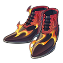

추천 광추
은하철도의 밤
적 수만큼 공격력 · 격파 후 피해
효과 자세히
필드 적 1기당 공격력 +9%, 최대 +45%. 적 약점 격파 시 피해 +30% 1턴.
동트기 전
치피 +36% · 추가 공격 +48%
효과 자세히
스킬·필살기 피해 +18%. 사용 후 몽신 획득 → 다음 추가 공격 피해 +48%.
천재들의 휴식
공격력 +32% · 처치 후 치피 +48%
효과 자세히
자신이 적을 처치하면 치피 버프 3턴.
멈추지 않는 연산
공격력 +12% · 광역 공격 가속
효과 자세히
명중 적 1기당 공격력 +8%, 최대 +40%. 3기 이상 명중 시 속도 +16% 1턴.
느낌 있는 아침 식사 루틴
피해 +24% · 처치당 공격력 +8%
효과 자세히
공격력 최대 3스택 +24%.
추천 유물
재와 뼈마저 불사르는 대공 4 · 주인 없는 황폐한 별 츠가냐 2
- 머리
 주옵션HP부옵션치명타 확률 · 치명타 피해 · 공격력% · 속도
주옵션HP부옵션치명타 확률 · 치명타 피해 · 공격력% · 속도 - 손
 주옵션공격력부옵션치명타 확률 · 치명타 피해 · 공격력% · 속도
주옵션공격력부옵션치명타 확률 · 치명타 피해 · 공격력% · 속도 - 몸통
 주옵션치명타 확률 / 치명타 피해부옵션치명타 확률 (주옵션 제외) · 치명타 피해 (주옵션 제외) · 공격력% · 속도
주옵션치명타 확률 / 치명타 피해부옵션치명타 확률 (주옵션 제외) · 치명타 피해 (주옵션 제외) · 공격력% · 속도 - 다리

주옵션공격력% / 속도부옵션치명타 확률 · 치명타 피해 · 공격력% (주옵션 제외) · 속도 (주옵션 제외) - 구체
 주옵션얼음 속성 피해 / 공격력%부옵션치명타 확률 · 치명타 피해 · 공격력% (주옵션 제외) · 속도
주옵션얼음 속성 피해 / 공격력%부옵션치명타 확률 · 치명타 피해 · 공격력% (주옵션 제외) · 속도 - 매듭
 주옵션공격력%부옵션치명타 확률 · 치명타 피해 · 속도
주옵션공격력%부옵션치명타 확률 · 치명타 피해 · 속도
이 조합을 추천하는 이유
대공 추가 공격 피해 +20%. 츠가냐 적 처치당 치피 +4%, 최대 40%.
지식의 바다에 빠진 학자 4 · 회전을 멈춘 살소토 2
- 머리
 주옵션HP부옵션치명타 확률 · 치명타 피해 · 속도 · 공격력%
주옵션HP부옵션치명타 확률 · 치명타 피해 · 속도 · 공격력% - 손
 주옵션공격력부옵션치명타 확률 · 치명타 피해 · 속도 · 공격력%
주옵션공격력부옵션치명타 확률 · 치명타 피해 · 속도 · 공격력% - 몸통
 주옵션치명타 확률 / 치명타 피해부옵션치명타 확률 (주옵션 제외) · 치명타 피해 (주옵션 제외) · 속도 · 공격력%
주옵션치명타 확률 / 치명타 피해부옵션치명타 확률 (주옵션 제외) · 치명타 피해 (주옵션 제외) · 속도 · 공격력% - 다리
 주옵션속도 / 공격력%부옵션치명타 확률 · 치명타 피해 · 속도 (주옵션 제외) · 공격력% (주옵션 제외)
주옵션속도 / 공격력%부옵션치명타 확률 · 치명타 피해 · 속도 (주옵션 제외) · 공격력% (주옵션 제외) - 구체
 주옵션얼음 속성 피해부옵션치명타 확률 · 치명타 피해 · 속도 · 공격력%
주옵션얼음 속성 피해부옵션치명타 확률 · 치명타 피해 · 속도 · 공격력% - 매듭
 주옵션공격력%부옵션치명타 확률 · 치명타 피해 · 속도
주옵션공격력%부옵션치명타 확률 · 치명타 피해 · 속도
이 조합을 추천하는 이유
학자 전투 스킬·필살기 피해 +20%. 살소토 치확 50%에서 필살기·추가 공격 피해 +15%.
재와 뼈마저 불사르는 대공 4 · 이즈모 현세와 타카마 신국 2
- 머리
주옵션HP부옵션치명타 확률 · 치명타 피해 · 공격력% · 속도
- 손
주옵션공격력부옵션치명타 확률 · 치명타 피해 · 공격력% · 속도
- 몸통
주옵션치명타 확률 / 치명타 피해부옵션치명타 확률 (주옵션 제외) · 치명타 피해 (주옵션 제외) · 공격력% · 속도
- 다리 주옵션공격력%부옵션치명타 확률 · 치명타 피해 · 속도
- 구체
 주옵션얼음 속성 피해 / 공격력%부옵션치명타 확률 · 치명타 피해 · 공격력% (주옵션 제외) · 속도
주옵션얼음 속성 피해 / 공격력%부옵션치명타 확률 · 치명타 피해 · 공격력% (주옵션 제외) · 속도 - 매듭
 주옵션공격력%부옵션치명타 확률 · 치명타 피해 · 속도
주옵션공격력%부옵션치명타 확률 · 치명타 피해 · 속도
이 조합을 추천하는 이유
이즈모는 같은 운명의 길의 아군이 전투에 있을 때 치명타 확률을 12% 높입니다.
이 정도면 잘 키웠다
선택한 세팅 기준 · —는 확인된 수치 없음
- 허구 이야기
- 2돌 치확 별도
추가 공격과 처치 중첩을 활용합니다.
| 스탯 | 추천 스탯 | 준종결 | 종결 |
|---|---|---|---|
| 공격력 | 2500 | — | — |
| 속도 | 기본 속도 | — | — |
| 치명타 확률 | 85%[1]헤르타 2돌의 전투 치명타 확률 최대 15%를 따로 계산. | — | — |
| 치명타 피해 | 140% | — | — |
세팅 기준·출처
공개 가이드에서 이 세팅의 준종결 또는 종결 수치를 확인하지 못했습니다.
스탯 조건과 각주
- 치명타 확률 · 추천 스탯 헤르타 2돌의 전투 치명타 확률 최대 15%를 따로 계산. ↑
헤르타 자신의 스킬과 필살기 비중이 큰 경우 사용합니다.
| 스탯 | 추천 스탯 | 준종결 | 종결 |
|---|---|---|---|
| 공격력 | 2000~2400+ | — | — |
| 속도 | 134+ | — | — |
| 치명타 확률 | 65~70%+ | — | — |
| 치명타 피해 | 130~150%+ | — | — |
성혼과 추천 돌파
2돌 연쇄 치확 · 4돌 특성 피해 · 6돌 필살기 후 공격력 증가.
1HP 50% 이하 적 일반 공격 강화
공격력 40%의 얼음 추가 피해.
2특성 발동당 치확 +3%추천
최대 5스택 +15%.
3전투 스킬 +2 · 일반 공격 +1
스킬·일반 공격 레벨 상한 각각 15·10.
4특성 추가 공격 피해 +10%추천
때리려면 뺨을
5필살기·특성 +2
필살기·특성 레벨 상한 각각 15.
6필살기 → 공격력 +25%추천
1턴.
추천 파티


기본 운영과 행적
적 체력선을 여러 개 넘기기
아군 광역 공격으로 여러 적을 HP 50% 이하로 낮춰 특성 추가 공격을 잇기.
- 필살기로 적 체력이 함께 내려가면 특성 연쇄 가능. 같은 적의 동일 체력 조건 반복 발동에는 의존하지 않음.
행적 육성 순서
전투 스킬·특성 → 필살기 → 일반 공격
아하 속도 계산기 →기준과 출처 · 2026-11-27
4.7 데이터 · Prydwen 장비 참고 · 자료실 편성 예시